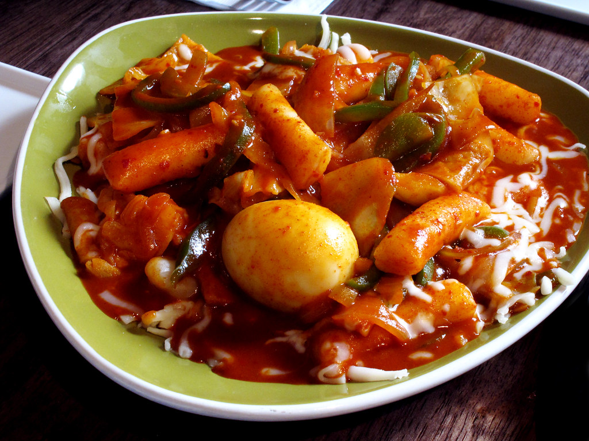
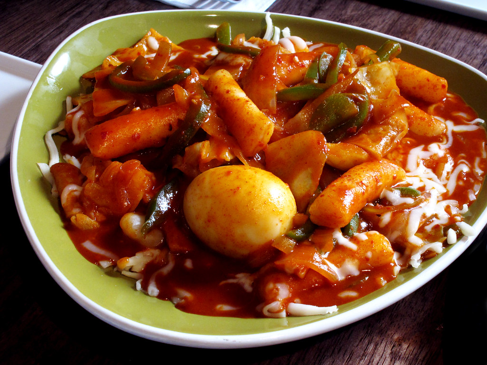

Soup dumplings, also known as xiaolongbao, are delicate steamed dumplings filled with a savory mixture of seasoned meat and a rich, flavorful broth that bursts in your mouth with each bite.
Hand-pulled noodles, or lamian, are a type of Chinese noodle made from wheat flour, skillfully stretched and twisted by hand to create long, chewy strands that are often served in flavorful broths or stir-fried dishes.
Carrot pudding is a sweet, spiced dessert made from grated carrots, flour, sugar, and various spices, often steamed or baked until it achieves a moist, dense texture, and is sometimes served with a rich sauce or topped with cream.
Tres leches is a rich and moist Latin American cake soaked in three types of milk—evaporated milk, sweetened condensed milk, and whole milk—resulting in a creamy texture, often topped with whipped cream and fresh fruit.
Tteokbokki is a popular Korean street food dish made of chewy rice cakes stir-fried in a spicy-sweet gochujang (red chili paste) sauce, often accompanied by fish cakes, vegetables, and hard-boiled eggs.
Chili relleno is a traditional Mexican dish featuring poblano peppers that are roasted, stuffed with cheese or a meat mixture, battered, and then fried until golden, often served with a flavorful tomato sauce.